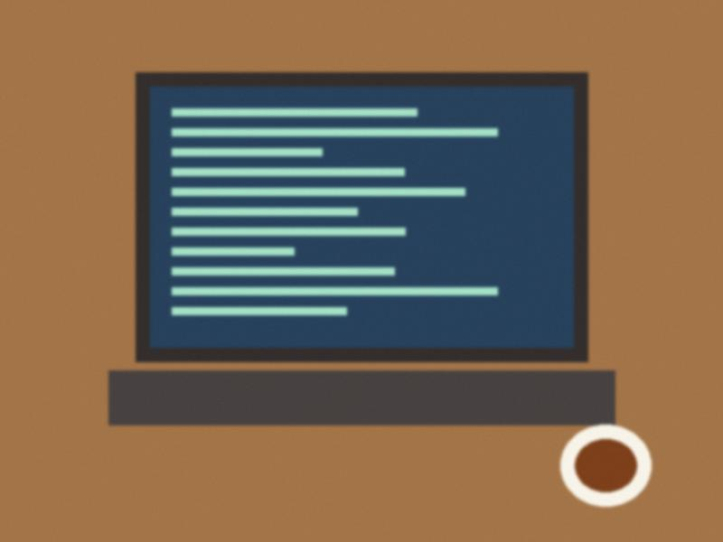

First two months at Toylo
04 December 2016 · work

My new desk at Toylo. One monitor, a window, a real chair.It is a real office, on the second floor above a dentist. Eleven people. The coffee machine is better than the one in the shop, and the router is better than the router at my house. The best change: I work on one product, not on twelve sites with twelve uncles.
The hardest thing: the daily meeting at 10:00. I am a person who worked in socks until noon. The first week I came with the shirt, the second week without socks problem, the third week they asked whether I am ill because I looked so serious. Now we are friends.
Toylo has 140 halls in Talas, Nurzhan and Iyık Janyl. The toikana owners are very hard customers. Every hall wants a different button.
1 Comment
Congratulations! Please make the music optional on the booking page. For the people.
Comments are closed.